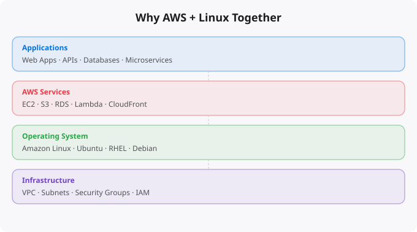

If you want to build a career in cloud computing, you will quickly realize that two skills come up in almost every job description: AWS and Linux. Not one or the other — both. This is not a coincidence. These two technologies are deeply connected, and understanding how they work together will give you a major advantage over people who learn them in isolation.
Amazon Web Services, or AWS, is the world's largest cloud platform. It provides hundreds of services — from virtual servers and storage to databases, machine learning, networking, and more. Instead of buying physical hardware, companies use AWS to rent computing resources on demand. You pay only for what you use, scale up when needed, and shut down when done.
AWS launched in 2006 and today powers a huge portion of the internet. Netflix, Airbnb, NASA, the CIA, and millions of startups and enterprises run their infrastructure on AWS. When you stream a video, book a hotel, or use a mobile app, there is a good chance AWS is involved somewhere in the backend.
Linux is an open-source operating system. It is the OS that runs the majority of servers in the world — including most of AWS's own infrastructure. Linux is known for being stable, secure, lightweight, and free. Unlike Windows, Linux was built for server environments. It has no graphical bloat by default. Everything happens through the command line, which makes it extremely efficient for running applications and automating tasks.
The most common Linux distributions you will encounter in cloud environments are Ubuntu, Amazon Linux, CentOS, and Red Hat Enterprise Linux (RHEL). AWS provides its own distribution called Amazon Linux 2 and Amazon Linux 2023, which are optimized for running on EC2 instances.
When you launch a virtual server on AWS — called an EC2 instance — the default operating system is Linux. Most EC2 AMIs (Amazon Machine Images) are Linux-based. The reason is simple: Linux is free, efficient, and scales well. A Linux server uses far fewer resources than a Windows server doing the same job, which means lower costs on AWS.
When you connect to your EC2 instance, you connect via SSH — a Linux protocol. When you deploy a web server, you use Nginx or Apache — Linux-native software. When you run containers with Docker, the container host is almost always Linux. When you write automation scripts in the cloud, you write Bash — the Linux shell language. Learning AWS without Linux means you will constantly hit walls. Learning Linux without AWS means you have no modern platform to practice on.
Look at any cloud engineer, DevOps engineer, site reliability engineer, or backend developer job description. You will see AWS and Linux mentioned together, almost every time. Employers want people who can do both because real infrastructure requires both. A person who only knows clicking around in the AWS console but cannot handle a Linux server is limited. A person who knows Linux deeply but has never deployed on a cloud platform is outdated.
The combination of AWS and Linux opens doors to roles like Cloud Engineer, DevOps Engineer, Platform Engineer, Solutions Architect, Infrastructure Engineer, and more. These roles pay well. They are in high demand. And the barrier to entry for people who know both is significantly lower than it seems.
This series covers the complete AWS and Linux combination from the ground up. Here is what each part will teach you:
You do not need prior cloud experience for this series. But having some familiarity with computers, basic terminal usage, or any programming language will help. If you have never used a command line before, consider spending a few hours with basic Linux commands first — knowing how to navigate directories, edit files, and run commands will make every subsequent lesson much smoother.
You will need a free AWS account. AWS offers a Free Tier that includes 750 hours per month of EC2 usage for 12 months, along with free storage, database, and other services. Everything in this series can be done within the free tier limits as long as you clean up resources after each lesson.
Do not just read. Every lesson has commands and steps you should actually run. Open your terminal. Log into AWS. Make mistakes. Read error messages. Fix them. That is how real learning happens. The people who become genuinely skilled at cloud infrastructure are the ones who break things and figure out how to fix them, not the ones who just watch tutorials.
In Part 2, we will create your AWS account, understand the console, and launch your first EC2 Linux server. By the end of that lesson, you will have a real Linux server running in the cloud.